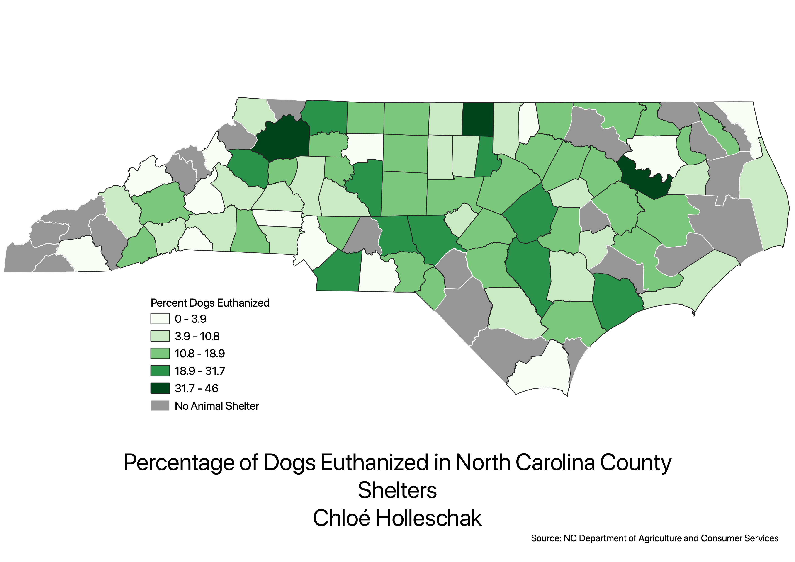

Welcome to HW 7
Below is a PNG of HW7, as well as my CSV file that I created based upon data I found from the NC Department of Agriculture and Consumer Serviecs.
I entered all the data, because I could only find it in PDF format, and I cleaned it to be compatible with QGIS.
For this map, I chose to compare the dogs taken in at all county animal shelters, with the dogs euthanized.
I love animals and I think that "No-Kill" Shelters are important and should be funded by the government.

Data used for this project
Cleaned/Created CSV
GEOJSON of this project
GEOJSON